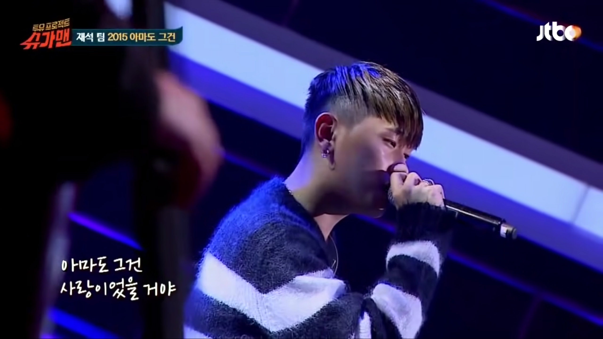
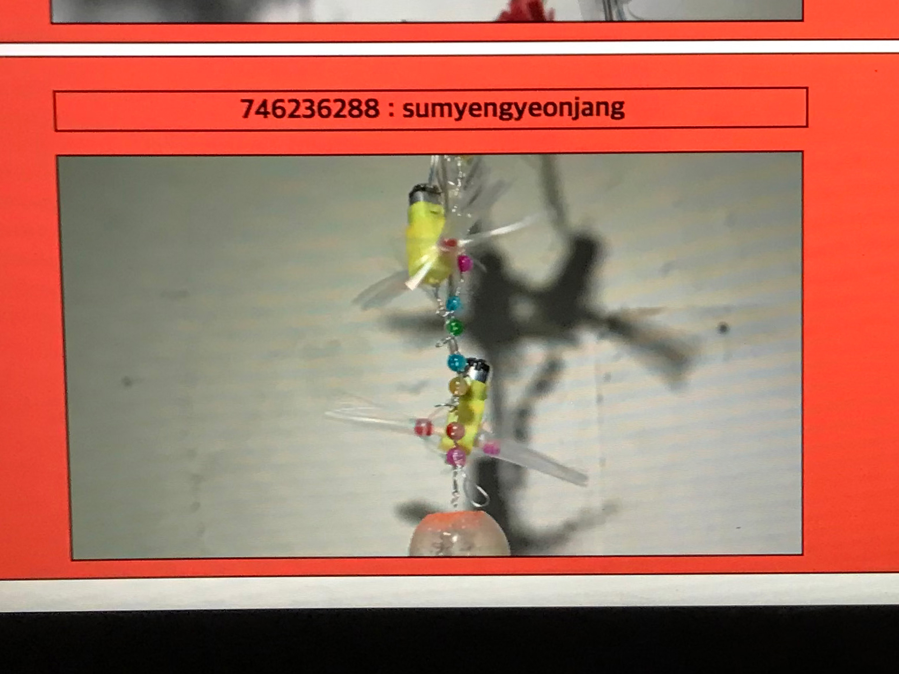
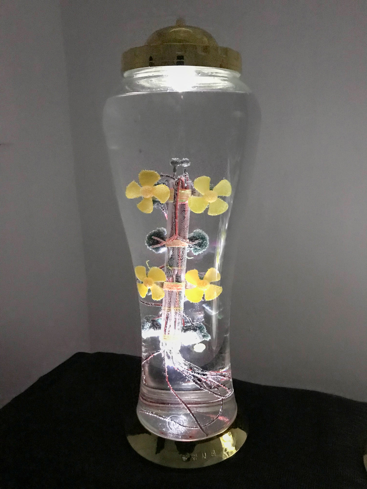
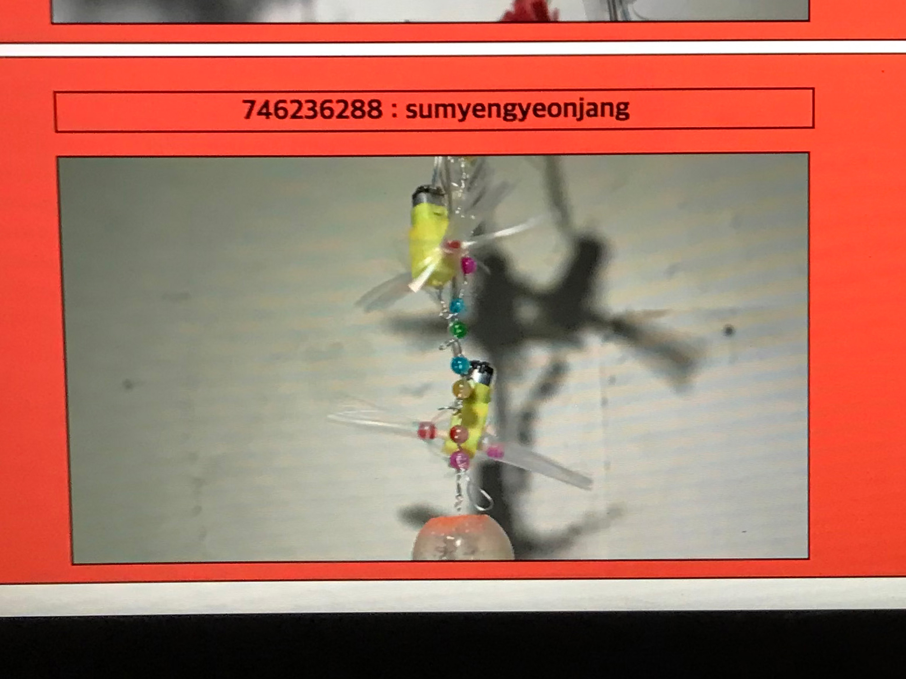
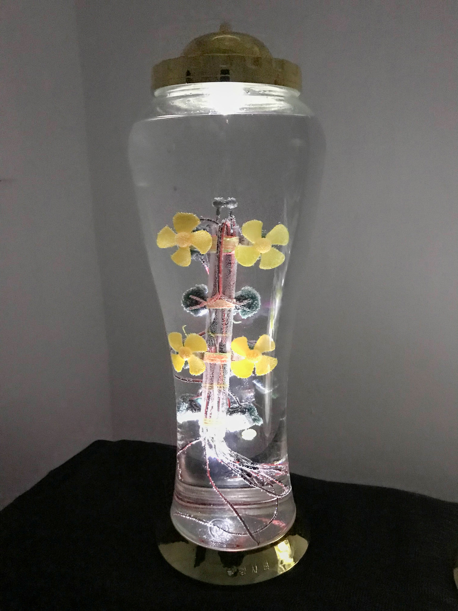
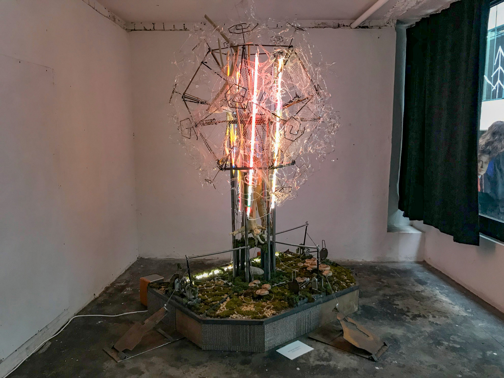

아마도 오드라데크
<크러쉬&로꼬 아마도 그건

안녕하세요, 손.
좋은 아침입니다.
굉장히 오랜만에 보내는 메일인 듯하네요.
사실 어제 몸살이 와서 체력이 많이 약해져 있었어요.
한숨 푹 자고 났더니 괜찮아졌습니다. ㅎㅎ
앞에 사진을 통해 예상하셨겠지만, 오늘은 ‘아마도 예술공간’에서 보았던 전시 제9회 아마도전시기획상 <정해져 있지 않은 거주지: 오드라데크> 에 관해 쓰고자 해요. 본 전시의 주제나 관계자분들에 대한 관심은 기존에 크게 없었지만, 손이 추천한다고 하니 한걸음에 달려갔던 전시였습니다.
 



가볍게 좋았던 작업에 대해서 이야기하는 것으로 시작하겠습니다.
노드 트리(이화영, 정강현)의 작업 <복합돌봄장치_주식회사생산소>(2022) 인데요.
작가들이 '타지에 터를 잡고 정착하는 과정에서 생긴 부산물(잔해 더미에서 온 강철, 버려진 무대세트 일부, 비닐 하우스에서 온 스텐철사 등)로 만든 특정한 오브제를
'수명 연장', '영생', '불로장생', '불로불사' 등의 키워드와 엮어 영상으로 제시하고
그 옆 공간에서 담금주처럼 담가버린 오브제를 보여줍니다.
저는 이 작업의 제작 방식/논리가 무식해서 좋았어요.
특정한 사물이 수명 연장에 효과적이라고 해서 그 사물을 술에 담가 마시는 문화를 기계에 대입시키다니 사고의 흐름이 정말 스트레이트하잖아요? 그 과격함에 먼저 흥미를 느끼게 되고, 수명 연장에 대한 우스꽝스러운 의지를 상상해보면서, 담금주라는 게 술을 우리는 방법이기도 하지만 동시에 그 담그는 재료를 적극적으로 보여주는 방법이기도 하겠다고 생각하였습니다.
쓰레기의 수명 연장?

노드 트리의 또 다른 작업인 <땡볕, 초승달과 대추>(2022) 도 흥미로웠습니다.
나중에 개인전 하시면 가봐야겠다는 생각을 했어요.
두 번째로 이야기하고자 하는 작업은 오선영 작가의 퍼포먼스! <Paludarium>(2022) 입니다.
일단 퍼포먼스 아트를 볼 수 있는 것 자체가 좋았구요.
시간(듀레이션)의 흐름에 따른 긴장(에너지) 곡선이 흥미로운 퍼포먼스라고 느꼈습니다.
그래프를 그려보자면 아래와 같았는데요.
아마 퍼포먼스의 시작이 상의를 입고 있지 않은 여성 퍼포머가 물속에 누워있는 장면이어서 그런 듯해요.
'옷을 입고 있지 않은 여성'이라는 이미지 자체가 주는 임팩트가 2022년에도 있다는 것을 체감할 수 있었습니다.
작가분께서도 그 힘을 알고 계셔서인지 퍼포먼스는 그닥 큼직큼직한 행위 없이 전개됩니다.
같은 자세로 머물러 있던 시간이 매우 길었고요. 누워있기, 기어다니기, 뒤척거리기, 시선 옮기기 정도의 디테일한 움직임 정도가 포인트였던 듯해요.
처음에는 퍼포머의 신체밖에 보이던 게 없었는데 시간이 흐름에 따라 빛이 반사되는 천장이나, 늪처럼 생긴 무대 공간, 탁한 물로 이루어진 환경에 더 주목하게 된 점도 있었습니다.
사실 이 퍼포먼스를 보며 제가 가장 고민했던 점은 이 퍼포먼스의 사진을 찍을까/말까였는데요.
앞에 사진에서 보여드렸다시피 안내말에서는 사진 촬영이 가능하다고 해서
퍼포머의 신체 앞면이 드러나지 않는 위 두 사진을 촬영했습니다.
그마저도 눈치를 보면서 촬영했어요.
그렇게 퍼포먼스를 보는 내내 "영상 촬영은 안 되는데 사진 촬영은 왜 가능하다고 했을까?"란 질문을 품고 있었는데요. 퍼포먼스가 끝나고 우연히 기획자분을 만나게 되어서 한번 여쭤봤습니다.
여쭤보았더니
"그러한 질문을 품게 되는 것 자체도 중요하다. 이 작업은 죽음에 관한 내용인데 왜 나는 이 퍼포먼스를 보며 죽음에 대한 고민이 아닌 '여성 신체를 사진 찍어도 되는가' 라는 방향의 고민을 하게 되었는지에 집중하는 것 역시 이 작업에서 중요하다."
라고 답변해주시더군요.
사실 저 답변을 듣고 처음에는 이해가 잘 안됐어요.
제가 전시 서문이나 작업 소개말보다는 작업을 먼저 보는 유형의 관객이다 보니 그 퍼포먼스가 ‘죽음'에 대한 것이었다는 사실도 몰랐었거든요.
그. 래. 서? 이번 전시의 주요 개념인 '오드라데크'를 알아보면 좋겠다는 생각에 기획의 글을 참조해보기 시작했습니다. 아래는 기획의 글을 제가 주관적으로 각색/요약한 글이에요.
공간과 장소를 점유하는 일을 오늘날 어떤 의미와 방향으로 설정해야 할 것인가. 팬데믹 이후 정부가 특정 공간을 차단/폐쇄하게 되는 기준은 그 공간의 상품 기능에 있다. 상품 기능이 저하된 곳은 가장 먼저 차단/폐쇄되기에, 공공시설은 가장 먼저 출입이 제한된다. 노동과 생산기능이 최우선에 놓이고, 각 공간의 쓸모 유무를 판단하는 과정에서 ‘공공성’과 ‘공동성’을 그에 용이한 방식으로 귀속할 수 있게 된다. 그렇게 모든 공간이 [쓸모 있는 것]과 [쓸모 없는 것]으로 나뉘게 된다. 오드라데크는 무언가가 이 [쓸모 없는 것]으로 규정되어 밀려 나갈 때 존재를 드러낸다.
무쓸모하거나 추한 것은 욕망의 대상에서 벗어나기에 소유의 관계망에 들어갈 수 없는데, 거의 모든 공간과 장소가 생산에 따른 자본이 개입하는 시대에 이 말은 곧, 자본이 욕망할만한 가치가 아니라면 사회 안에 있을 자리가 없음을 의미한다. 반면 쓰레기가 공간을 점유하는 방식은 소유의 기존 논리를 역행한다. 본 전시는 쓸모와 기능으로 점유되는 공간의 한계와 무쓸모와 추를 통한 오드라데크의 출몰을 가시적으로 드러냄으로써, 자본의 질서에 균열을 내는 방법을 모색한다.
한번 윗글의 관점으로 오선영 작가의 퍼포먼스를 읽어보겠습니다.
윗글에 따르면 퍼포먼스가 이뤄지는 장소는 '상품의 기능을 갖추지 못한 쓸모 없는 곳'이라고 볼 수 있겠습니다. 실제로 하수구처럼 생겼으니까요. 그리고 퍼포머의 신체는 '쓰레기'라고 볼 수 있겠죠? 실제로 누워있는 모양이나 움직임이 시체나 쓰레기 더미에 가깝습니다.
그렇다면 이 퍼포먼스의 목표는 자본/정부가 규정하는 '쓸모 있는 것'에 속하지 못해 밀려난 신체를 가시화하는 것이라고 이해해볼 수 있겠는데요.
저는 왜 이 퍼포먼스가 이야기하고자 하는 내용에 이입이 되지 않은/올라타지 못한 걸까요?
그 이유는 제가 이 퍼포먼스에서 퍼포머의 신체가 맡은 역할에 이입하기 이전에, 퍼포먼스의 가장 큰 재료라고 할 수 있는 ‘여성 신체’라는 사실에 아직 가치 판단이 자유롭지 않은 관객이기 때문 아닌가 싶습니다.
네, 서로 나누고 싶은 이야기를 주고받는 데에 이런 상식/감수성 차이가 방해하네요.
이게 현재 제 몸의 한계라고 생각합니다.
그래도 기획자분을 만나 질문을 나누고 같이 사진을 찍는 경험이라도 했기 때문에 위 내용까지 생각을 진행할 마음이 들었던 듯해요.
같은 맥락에서 우리 일상에 장애인이 가시화되지 않는다는 사실은 심각한 문제라는 생각이 드네요.
이 전시도 무언가를 가시화하려는 목표를 가지고 있잖아요.
사회의 무언가는 너무 가시화되는 반면 어떤 것은 너무 감춰진다는 감각을 얻고 갑니다.
이 전시를 통해서요!
네, 그럼 다음 메일로 찾아뵐게요.
이런 이야기를 함께 나눌 수 있는 사람이 있다는 게 너무 좋네요.
항상 고맙습니다.
재훈 드림.